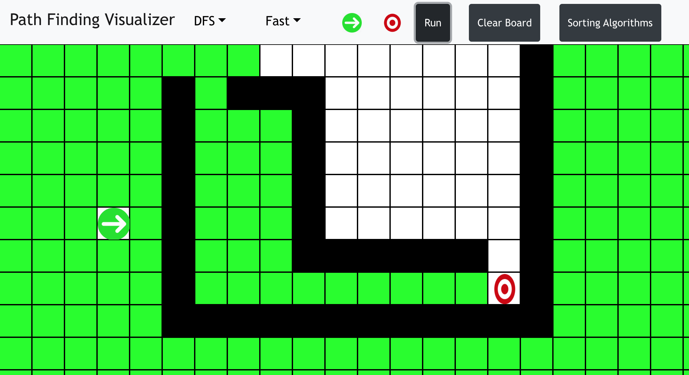
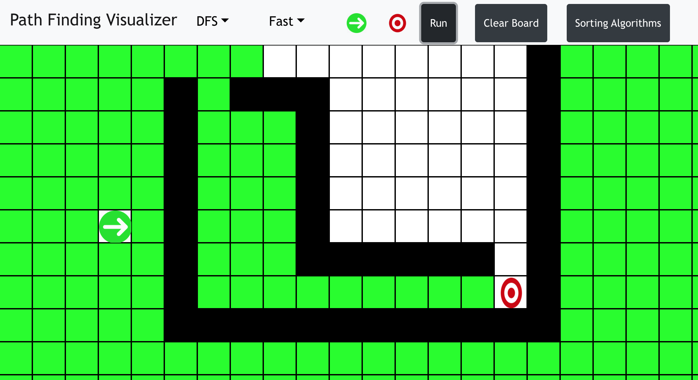

GITHUB LINK: https://jhartfie.github.io/Path-Finding-Visualizer/
ReactJS Pathfinding and Sorting Visualizer
This ReactJS project stands at the forefront of algorithmic
visualization, dynamically computing and displaying the shortest path
possible, alongside an interactive representation of various sorting
algorithms. It serves as a cutting-edge educational tool that
demonstrates the efficiency and application of these algorithms in
real-time.
Dynamic Pathfinding Visualization:
At the heart of this application is the implementation of three pivotal
search algorithms: Breadth-First Search (BFS), Depth-First Search (DFS),
and A*. Each algorithm offers a unique approach to computing the
shortest path, allowing users to visually compare and contrast their
methodologies and outcomes in an interactive environment.
The integration of these search algorithms into a single, cohesive application underscores the project's value as an educational platform. It not only highlights the technical differences between the algorithms but also provides insight into their practical applications in solving complex computational problems.
Interactive Sorting Algorithm Visualization:
Complementing the pathfinding feature, this project also incorporates a
suite of sorting algorithms including Bubble Sort, Merge Sort, Radix
Sort, and Quick Sort. Users can engage with the application to traverse
and sort randomly sized lines, witnessing the sorting process of each
algorithm in real-time. This feature provides a hands-on experience with
sorting algorithms, illustrating their efficiency and sorting mechanisms
visually.
By implementing these sorting algorithms, the project not only educates users on the underlying principles and mechanics of each method but also showcases the power of ReactJS in creating dynamic and interactive web applications that bring complex concepts to life.
This ReactJS project is a testament to the synergy between modern web development technologies and the timeless value of algorithmic theory. It exemplifies how interactive visualizations can enhance understanding and engagement with complex algorithms, making it an invaluable resource for both educational purposes and for those with a keen interest in computer science.
PICTURES OF PATH VISUALIZER:
 

PICTURES OF SORTING